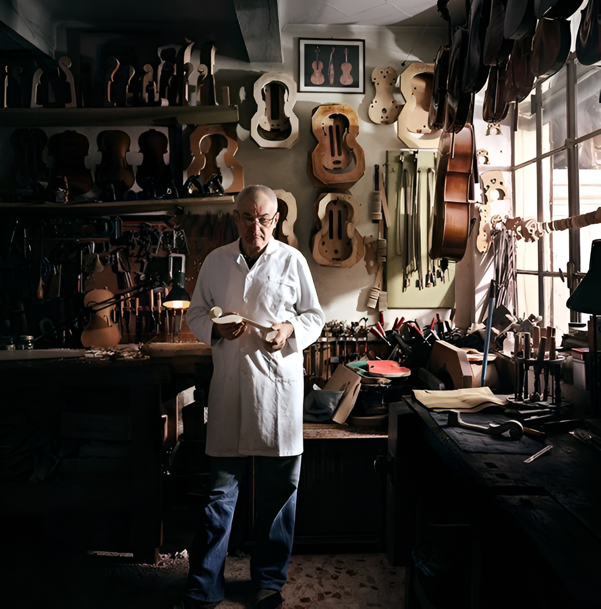
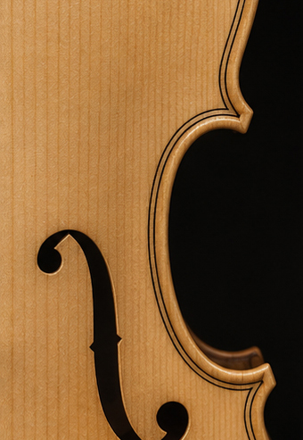
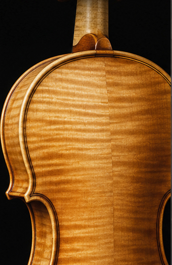
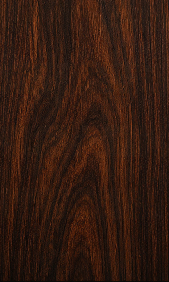
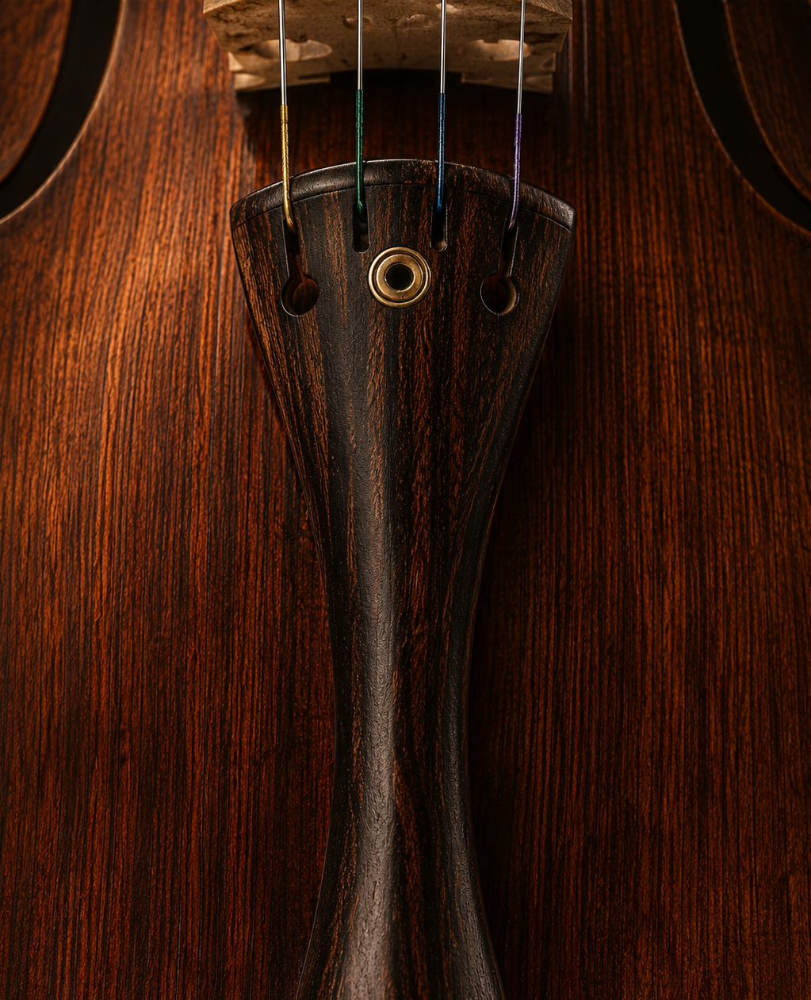
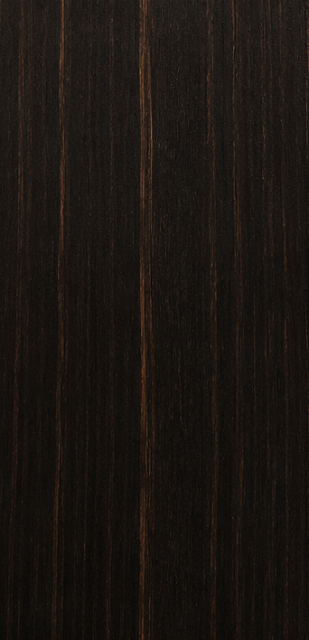
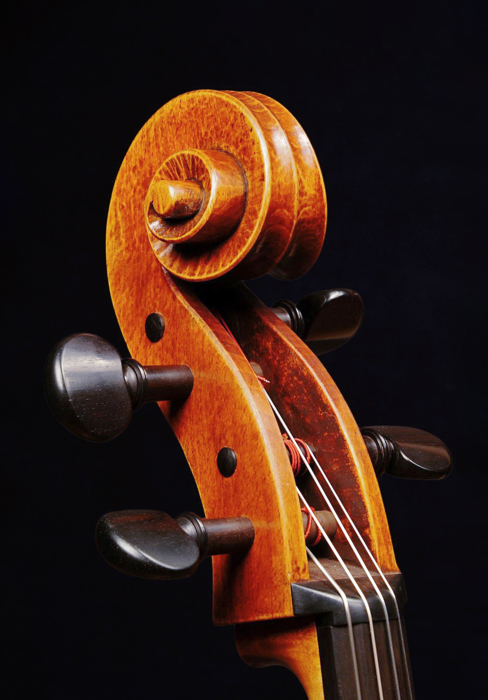
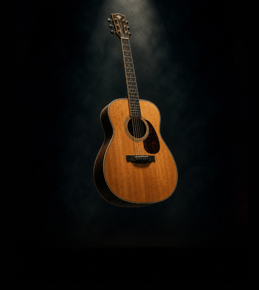
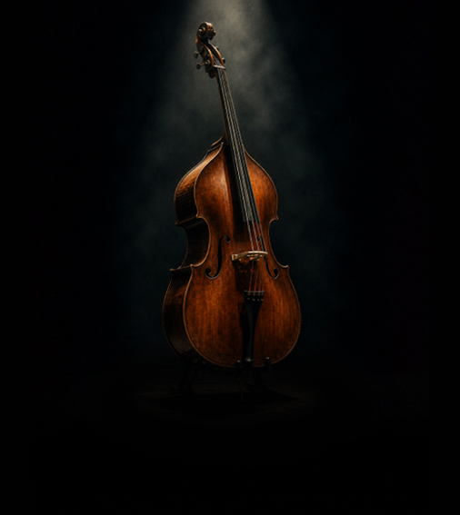

Del taller
al escenario
Construcción, restauración y formación en luthería de instrumentos de orquesta para músicos profesionales

El lugar donde la música toma forma
Somos un taller y escuela de lutería que busca honrar una tradición artesanal que trasciende generaciones.
Taller y escuela de lutería tradicional.
Las voces de la orquesta de cámara
Cada instrumento de cuerda aporta un sonido único
Detrás del proceso artesanal

Selección de maderas
Las maderas son seleccionadas por sus propiedades acústicas, y estéticas.
Construcción y ensamblado
Cada pieza es tallada, moldeada y ensamblada artesanalmente.
Barnizado y acabado
El barnizado y lustrado protegen la madera y embellecen el instrumento.
Montaje y cuerdas
Se colocan herrajes, clavijas y cuerdas, ajustando cada uno con precisión.
Ajuste acústico
Puente, alma y cuerdas son calibrados para optimizar la proyección sonora.
La materia prima del sonido
Cada madera aporta resonancia, estabilidad y carácter al instrumento
Cada madera aporta resonancia, estabilidad y carácter-

Abeto
Tapa armónicaLigero y resonante, ideal para la proyección sonora

-

Arce
Fondo y arosAporta estabilidad, resistencia y riqueza tonal

-

Palisandro
Accesorios y decoraciónValorado por su resistencia y belleza natural

-

Ébano
Clavijas y detallesDenso y duradero, utilizado en piezas de precisión

Formación en Luthería
Cursos y programas diseñados para acompañar cada etapa del aprendizaje
-
Nivel intermedio
Luthería del Violín Acústico
Construí un violín acústico desde cero aprendiendo técnicas tradicionales de luthería.
-

Nivel principianteLuthería de la Guitarra Criolla
Aprendé cada etapa del proceso de construcción de una guitarra acústica.
-

Nivel avanzadoLuthería del Contrabajo
Dominá las técnicas de construcción del instrumento de cuerda más imponente de la orquesta.